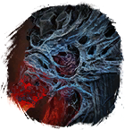

Открыть в интерактивной вики →
| Уровень | 125 |
|---|---|
| Сила (PvE) | 7607 |
| Аспект арены | Farao |
| Здоровье | 28 000 |
| Мана | 9000 |
| Выносливость | 9000 |
| Респаун | 25 минут - 35 минут |
Команда


Дроп
 (IV-V)
(IV-V) 
 Стихийная Броня (Друид 100)
Стихийная Броня (Друид 100)  Поцелуй Миллиона Звезд (Огненный Маг 100)
Поцелуй Миллиона Звезд (Огненный Маг 100)  Пелена Смерти (Вуду 100)
Пелена Смерти (Вуду 100)  Душа Мира (Шид 100)
Душа Мира (Шид 100)  Доспехи Бессмертия (Варвар 100)
Доспехи Бессмертия (Варвар 100)  Доспехи Ворлингов (Рыцарь 100)
Доспехи Ворлингов (Рыцарь 100)  Око Богов (Лучник 100)
Око Богов (Лучник 100)| Сеты | Синергетики | Эпики | |||
| Доспехи Бессмертия Стихийная Броня Око Богов Поцелуй Миллиона Звезд Доспехи Ворлингов Душа Мира Пелена Смерти | 40-60 ур. |  Эпики Эпики | |||
| Прочее: - | |||||
Статистика

Уровень: 125
Здоровье: 28 000
Мана: 9 000
Выносливость: 9 000
Умения
| Поджог | Огненный порыв Землетрясение Огненный Шар Магическая Искра Выброс лавы | Инкантация Отупление Рой ос Чувствительность к огню |
Иммунитеты / особые умения
Устойчивость к обездвиживанию
Локация
Пустошь Хвара